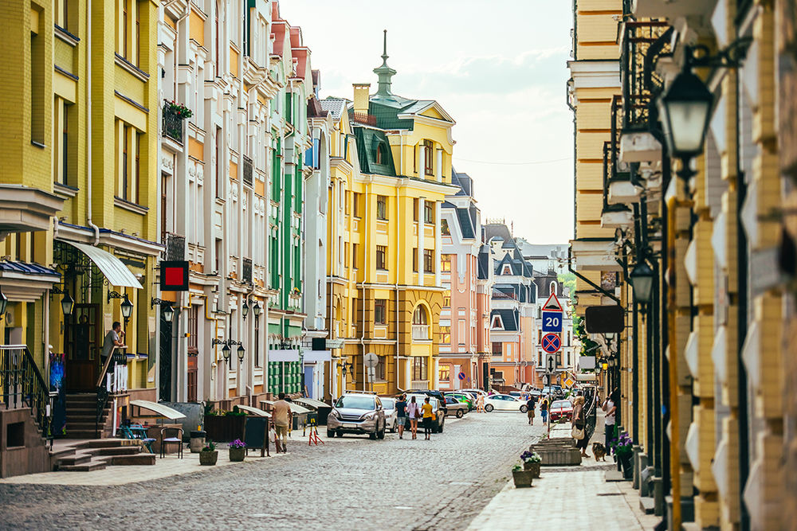
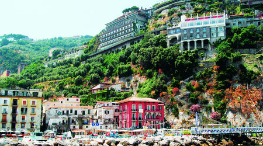
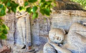

Don’t fancy a total-relaxation beach break for your next holiday?
Then try your hand at horse trekking, kayaking, yoga, painting and more.
All are guaranteed to exercise mind, body and soul, combined with an idyllic
environment, says Imogen Lepere.

Whether you’re just passing through or making a weekend of it, we give you the 48-hour lowdown on cities across the globe. What to see, what to do, what not to miss.
Wave goodbye to the mainland and discover unspoilt treasures, good food and kids’ activities galore on one of these European islands, says Imogen Lepere

See these destinations at their best by planning your family fun by season.
Try tulips in spring, pick summer fruits in the UK, dive in the autumn and embrace winter snow.
Countries primed to capture travellers' imagination
Sri Lanka is decidedly having its moment in the equatorial sun
and change is coming swiftly. Already notable to intrepid travellers
for its mix of religions and cultures, its timeless temples, its rich
and accessible wildlife, its growing surf scene and its people who defy
all odds by their welcome and friendliness after decades of civil conflict,
this is a country revived. There’s now more than ever for families, adrenaline
junkies, eco-tourists, wellness seekers and foodies of all budgets. Even the north
and east, including areas previously off limits, difficult to reach or lacking in
services, deliver new discoveries.

Gal Vihara
This is a group of beautiful Buddha images that probably marks
the high point of Sinhalese rock carving. They are part of Parakramabahu I’s
northern monastery. The Gal Vihara consists of four separate images, all cut
from one long slab of granite. At one time, each was enshrined within a separate enclosure.
The standing Buddha is 7m tall and is said to be the finest of the series.
The unusual crossed position of the arms and sorrowful facial expression led
to the theory that it was an image of the Buddha’s disciple Ananda, grieving
for his master’s departure for nirvana, since the reclining image is next to it.
Abhayagiri Dagoba
Dating back to the 1st century BC, this colossal dagoba was the ceremonial
focus of the 5000-strong Abhayagiri Monastery. Originally over 100m high,
it was one of the greatest structures in the ancient world, its scale only matched by
the pyramids of Giza (and nearby Jetavanarama).
Germany
has long been a powerhouse of innovation and has bestowed upon the world the printing press,
the automobile, the aspirin and other milestones of invention. And 100 years ago, a little
school in the Thuringian countryside kick-started an aesthetic movement so globally influential
that its reverberations are still felt today: the Bauhaus.
Join the year-long birthday party of this midwife of modernism that was founded in Weimar in 1919, flourished in Dessau and was quashed by the Nazis in Berlin in 1933.
Top things to do in Germany
Germany has a population of 81 million people.
Germany is a member of the European Union.
One-third of Germany is still covered in forests and woodlands.
65% of the highways in Germany (Autobahn) have no speed limit.
University is free for everyone (even non-Germans).
There are over 2100 castles in Germany.
There are over 1,500 different beers in Germany.
Most visited destinations by international tourist arrivals
In 2017, there were 1.323 billion international tourist arrivals worldwide, with a growth of 6.8% as compared to 2016.The top 10 international tourism destinations in 2017 were (2017 numbers are preliminary):
Table 1.
Rank
Destination
International tourist arrivals (2017)
International tourist arrivals (2016)
Change(2016) to (2017) (%)
1
France
86.9 million
82.7 million
5.1
2
Spain
81.8 million
75.3 million
8.6
3
US
76.9 million
76.4 million
0.7
4
China
60.7 million
59.3 million
2.5
5
Italy
58.3 million
52.4 million
11.2
Travel isn’t always pretty. It isn’t always comfortable. Sometimes it hurts, it even breaks your heart. But that’s okay. The journey changes you; it should change you. It leaves marks on your memory, on your consciousness, on your heart, and on your body. You take something with you. Hopefully, you leave something good behind. – Anthony Bourdain